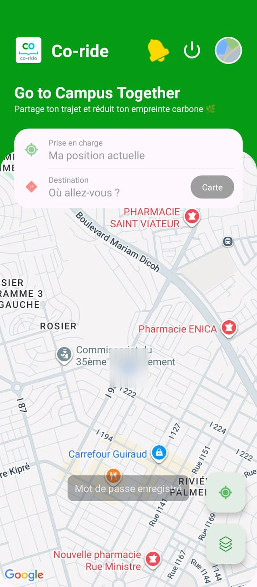
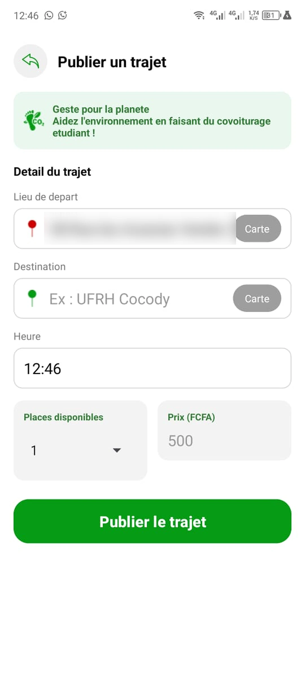
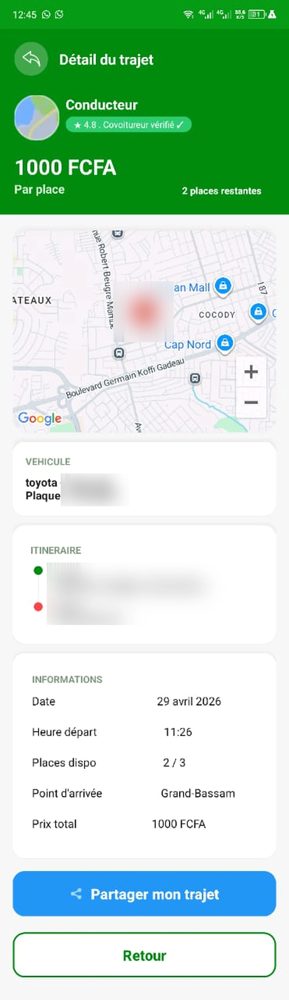
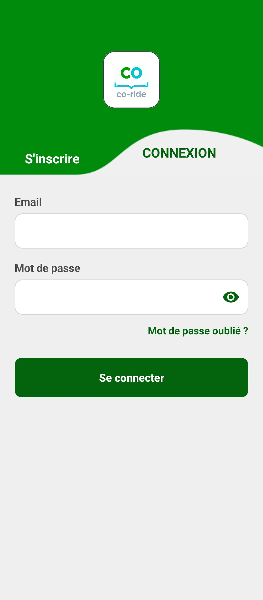
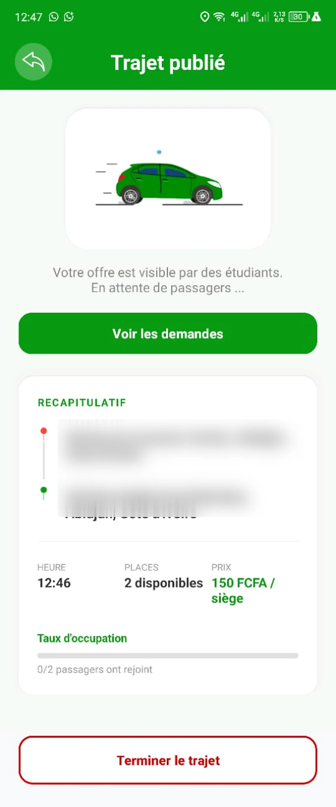
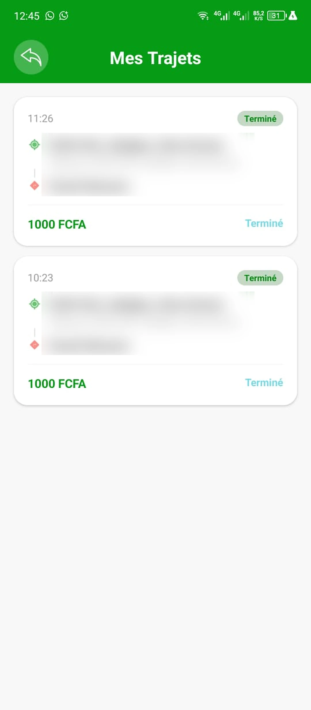
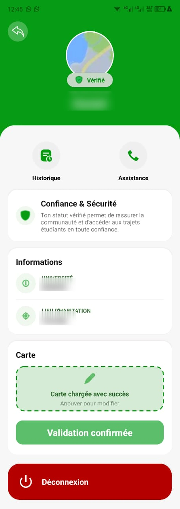

Trajets
Publication, détail, historique et liste des trajets étudiants.
Le covoiturage universitaire pensé pour partager un trajet et réduire l'empreinte carbone.
Le projet
Co‑Ride est une application Android de covoiturage conçue pendant la première cohorte de la GENIE Advanced Academy. Le dépôt contient l'authentification Firebase, la publication de trajets, la recherche de lieux, les cartes Google, les notifications et l'historique.
J'ai participé à la conception des interfaces et à l'intégration des fonctionnalités principales. Le projet a été présenté devant un jury professionnel.
Interfaces réelles
Captures de l'application Android fournies en novembre 2026. Les noms, plaques, positions et adresses précises ont été floutés.







Fonctionnalités vérifiées dans le dépôt
Publication, détail, historique et liste des trajets étudiants.
Google Maps, Places et sélection d'un point sur la carte.
Connexion Firebase, profil, vérification et récupération du mot de passe.
Firebase Cloud Messaging et écran de notifications dédié.